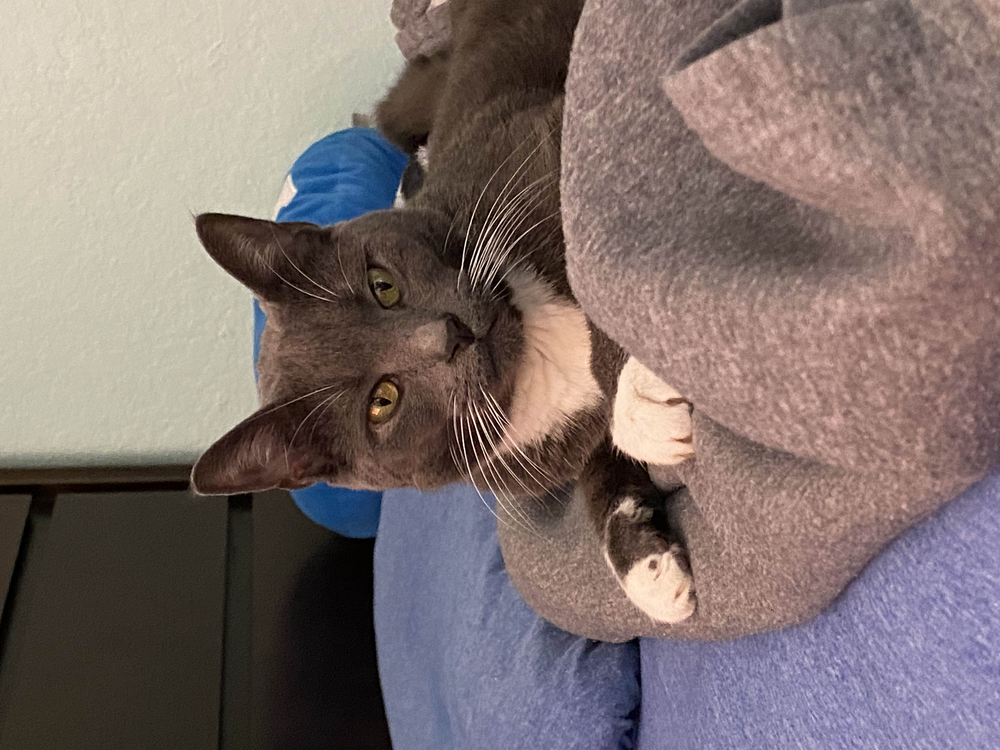
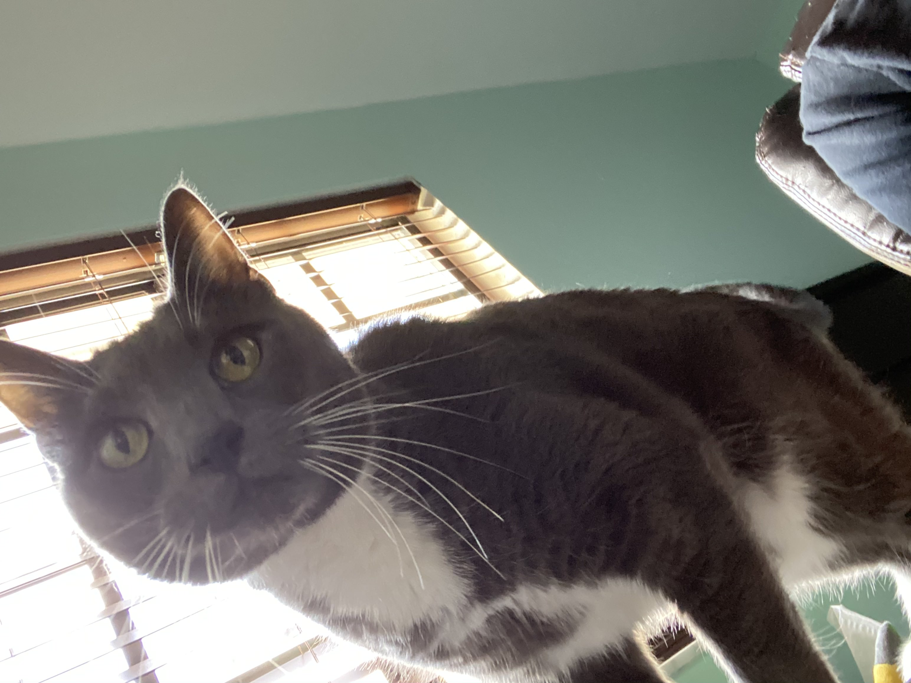

Lily is a 12 year old American shorthair. She is Adam’s first pet.
Lily is a very sweet kitty who loves to cuddle, especially at 4 in the
morning.

She also occasionally craves violence and will chase Adam down the
hallway at 30 mph.
So cute!
